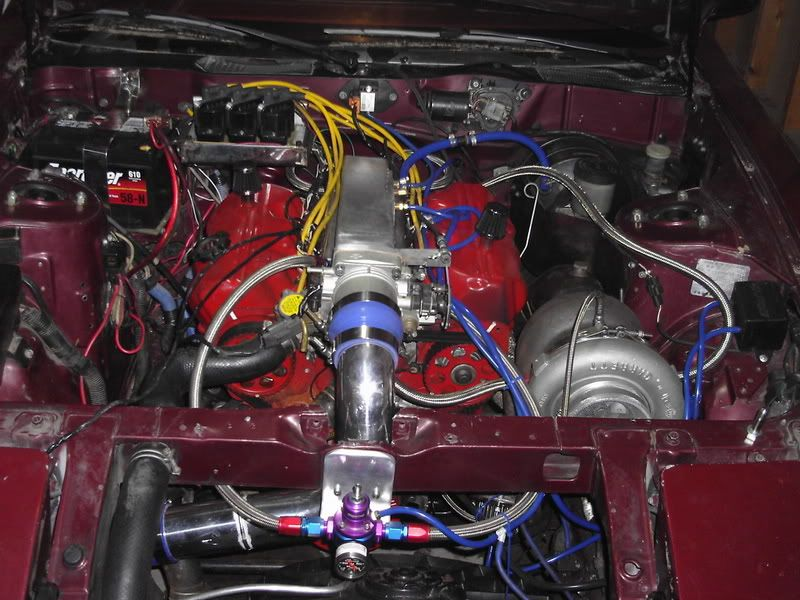

-
I am curious to hear where others have relocated the FRP when installing an L&P plenum or other plenum that wont allow for stock location.
I was thinking of simply mounting it near the stock fuel filter.
I also will be rerouting the stock vacuum lines that run in front of the plenum. I am thinking that a rout along the front frame x-member with silicon lines makes sense. Any suggestions from personal experience on this? I cant imagine there is much worry on this part.Just stand back and throw money.
Performance costs money.
Reliable performance costs more. -
as far as i can remember, only the maxima intakes require the FPR to be moved! but yes right near the fuel filter is a good place!http://www.youtube.com/user/onefast87 -
To say that only the maxima has to be relocated probably isn't entirely accurate.
http://www.redz31.com/turbofaq/mod.plenum.html
There are other examples of custom plenums that the stock location wont work on.
I considered the "slightly modified" location for the FPR with the L&P as it is shown on the link above but I have 2 considerations that make me not want to do that:
1- Actually creating a secure mount for it could / would be a pain as far as I can tell since the stock bolt holes for securing it no longer exist.
2- I would like to "clean up" the look of the engine. Now I do realize that fuel lines will be running up to my stock fuel rails, but that shouldn't look bad if routed well.
Anyhow…this is why I posted…for ideas. Hopefully I have given enough of my bassakwards logic to solicit some other ideas. :wink:Just stand back and throw money.
Performance costs money.
Reliable performance costs more. -
I made a bracket for mine and moved it to in front of the hood latch. I think it looks kinda cool. Oh and the most important part, it seems to work too!85 Z31 6.0 LSX turbo 766whp/792wtq
04 GTO, LS6, big cam, porting, N20… underway for summertime daily driver. -
Now that is a location I hadn't thought of. Interesting.SATAN wrote: I made a bracket for mine and moved it to in front of the hood latch. I think it looks kinda cool. Oh and the most important part, it seems to work too!
Ya…the whole working thing is a plus. 8)Just stand back and throw money.
Performance costs money.
Reliable performance costs more. -
granted its not stock but… I still think its a good place to have it.
Sorry I know this pic is all over the place but this is just for a FPR reference.
85 Z31 6.0 LSX turbo 766whp/792wtq
04 GTO, LS6, big cam, porting, N20… underway for summertime daily driver. -
No need to apologize. I never get tired of seeing your engine bay or others that have gone well beyond the norm. Even for an NA guy I can still appreciate that big ass turbo in plain view....ooohhh chills…Good stuff in my book. 8)Just stand back and throw money.
Performance costs money.
Reliable performance costs more. -
Mine is in the stock location with a LP plenum:
-
Jason-
did you fab a mounting bracket for it or just let the hoses support it in place?Just stand back and throw money.
Performance costs money.
Reliable performance costs more. -
Look at the picture… it's mounted in the stock location.OR-Zman wrote: Jason-
did you fab a mounting bracket for it or just let the hoses support it in place?

Copyright © 2006–. All rights reserved. Privacy Policy